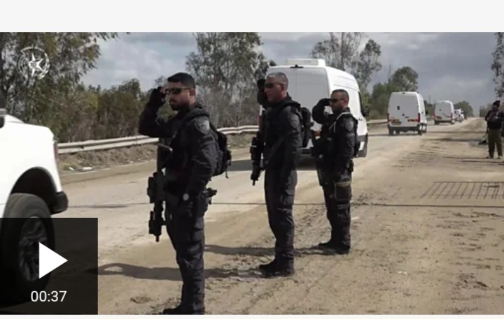
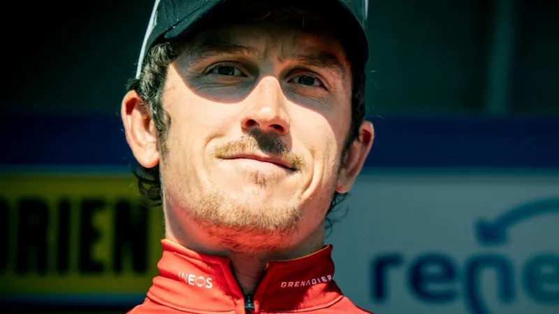

Register
Login
Home
News
Sport
Business
Innovation
Culture
Travel
Earth
Video
Live
NEWS
LIVE
Two female
hostages realeased by boko haram in Nigeria.
The hostages were freed in a heavily staged handover surrounded by gunmen, ahead of the expected release of 200 prisoners.
Moment nigerian hostages were released by boko-haram
Image showing police vans carrying women and driving to the court in Nigeria, where the were set free. since 2014, the group has kidnapped thousands of people. 
Mr.President has released prisoners been held captive for 6yrs.
MUST READ:
Seventy prisoners that has been jailed for 6yrs has been set free by Mr President
2 days ago
Thrilled, scared and unsuprised:
Americans react to Trump first week
We spoke to 10 Americans across the political spectrum about Donald Trump first action as President
6 mins ago
I need a purpose -Tour De France legend Geraint Thomas on his next move
British cycling great Geraint Thomas reflects on his glittering career as he prepares for his final season before retiring.
6 hrs ago

Why Saudi Arabia is the venue of choice for Trumps talks on Ukraine
The Kingdom has gone from pariah to potential peacemaker in recent years says the President of USA.
We hope for a positive result after the meeting
few mins ago
Ukraine end game: What each side wants a peace deal
Donald Trumps phone call with Putin has shocked both Ukraine president Zelensky and allies alike, but is it enough to start peace talks?
3 days ago